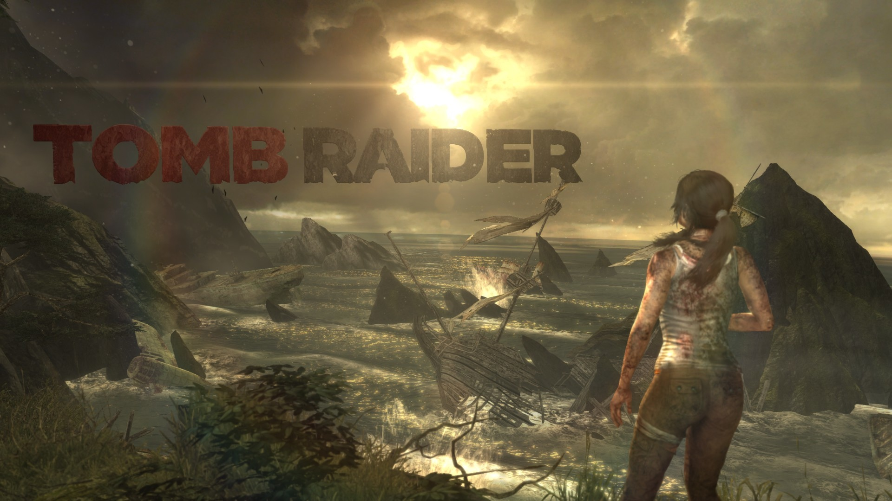
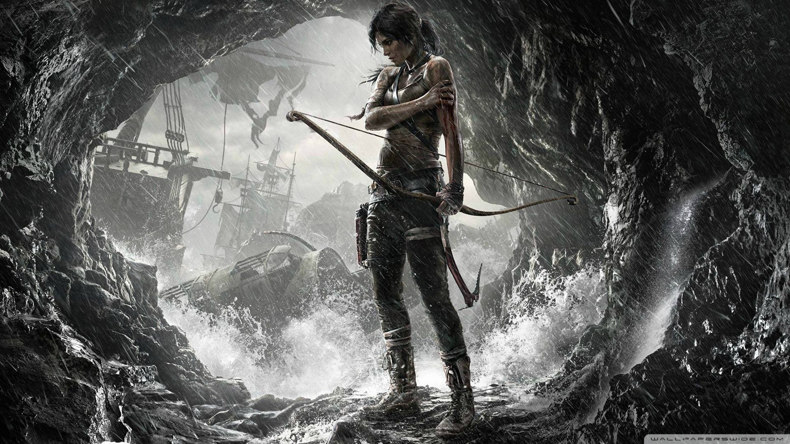

Setting

The game is set on Yamatai, a fictional lost island in the Dragon's Triangle off the coast of Japan. The island—and the kingdom that once existed there—is shrouded in mystery, given its reputation for fearsome storms and shipwrecks that litter its coastline. Yamatai was once ruled by a queen named Himiko, known by her honorific title of "Sun Queen", who according to legend was blessed with shamanistic powers that enabled her to control the weather. Very little is known about Yamatai's history in the time since Himiko's death, other than that the island's infamy was established shortly thereafter. In exploring the island, the player may find evidence that—among others—Portuguese traders, United States Marines and a Japanese military project were all stranded on Yamatai at various points throughout history. At the start of the game, the island is populated exclusively by the Solarii Brotherhood, a violent cult of criminals, mercenaries and shipwreck survivors. The Solarii Brotherhood has established its own society based on the worship of Himiko, complete with a social structure and laws, with their exact purpose and intentions being explored over the course of the story.
The player takes on the role of Lara, who is a young and ambitious archaeology graduate whose theories on the location of the lost kingdom of Yamatai have convinced the Nishimura family—descendants from the people of Yamatai themselves—to fund an expedition in search of the kingdom. The expedition is led by Dr. James Whitman, a celebrity archaeologist who has fallen on hard times and is desperate to avoid bankruptcy, and is accompanied by Conrad Roth, a Royal Marine turned adventurer and close friend of the Croft family who serves as mentor to Lara; Samantha "Sam" Nishimura, Lara's friend and a representative of the Nishimura family who films the expedition for a documentary; Joslyn Reyes, a skeptical and temperamental mechanic and single mother; Jonah Maiava, an imposing and placid fisherman who is willing to believe in the existence of the paranormal and esoteric; Angus "Grim" Grimaldi, the gruff Glaswegian helmsman of the Endurance; and Alex Weiss, a goofy and bespectacled electronics specialist.
